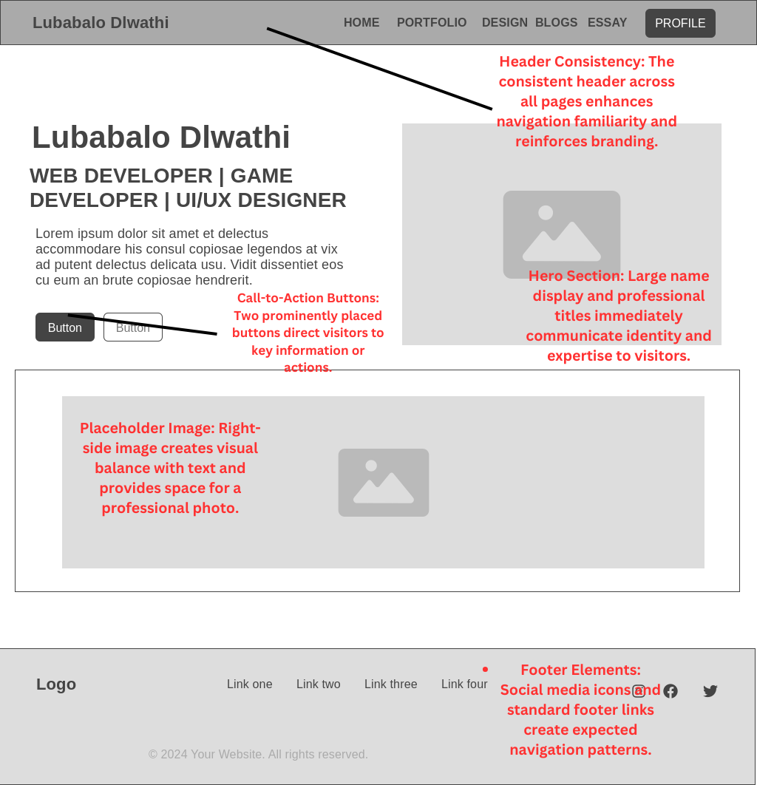
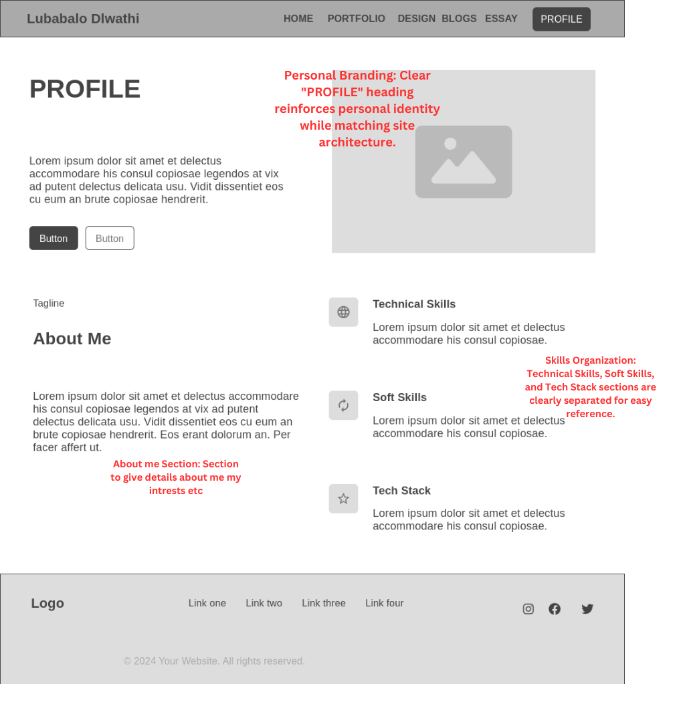
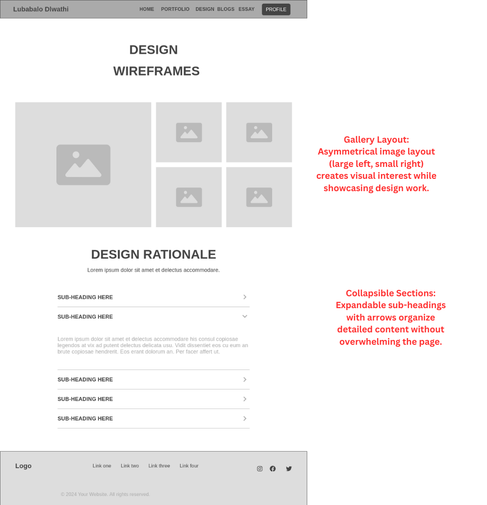
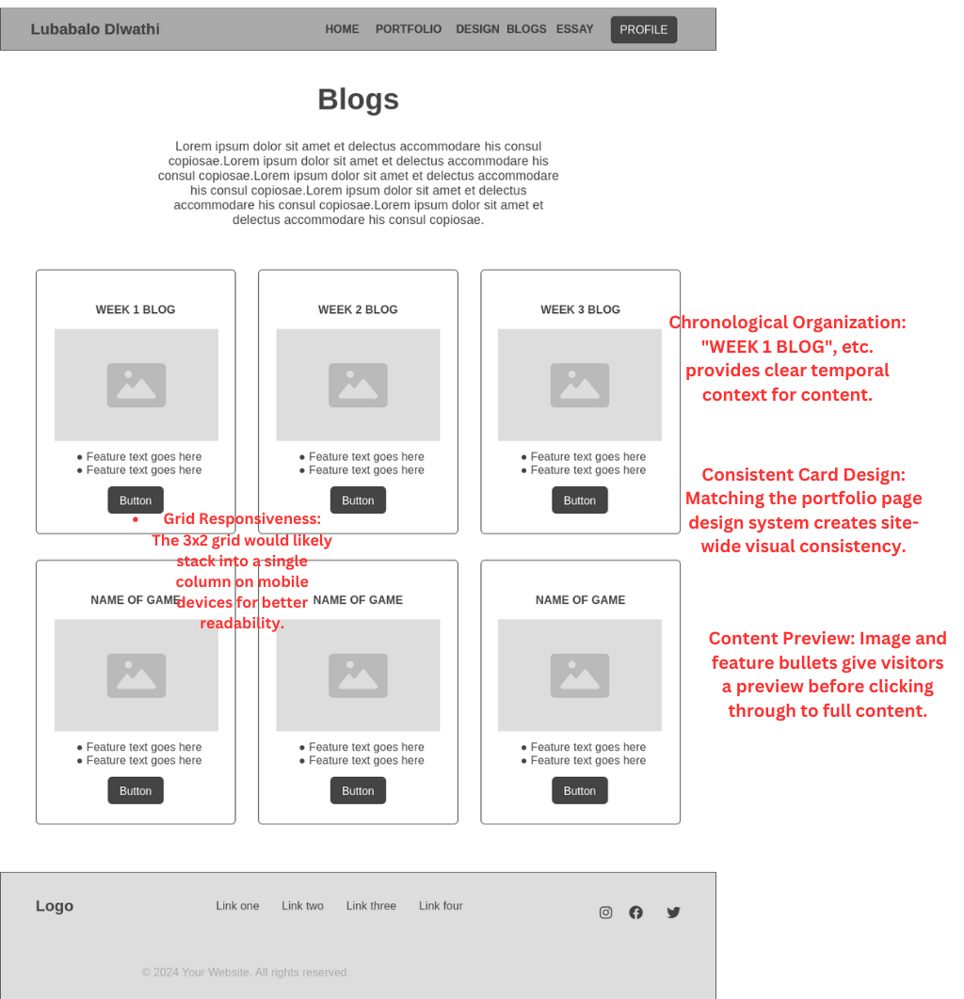
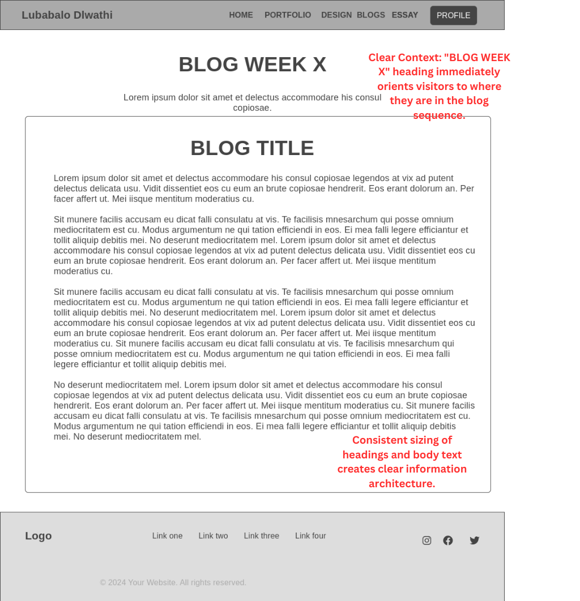

INTRODUCTION
This section documents my Interaction Design (IxD) process, aesthetic decisions, and accessibility considerations.
Every design choice is made with usability, clarity, and effective communication in mind.
The documentation includes initial ideation, reflections on iterative testing, and a final consolidation of style and structure.
Aesthetic Statement: My goal is to create a balanced, modern digital presence that is both functionally robust and visually compelling.
The design seamlessly integrates technical excellence with a clear user experience, guided by continuous user feedback and design refinement.
INTERACTION DESIGN PROCESS
My IxD process began with defining user personas and mapping out user journeys. I chose this approach because it placed human experience at the center of my design thinking from the start. By sketching personas representing my target audience—from tech recruiters to fellow designers—I created relatable benchmarks that guided my subsequent design decisions.
For journey mapping, I adapted the standard UX journey map by incorporating emotional touchpoints, helping me identify moments where users might experience confusion or frustration. This emotional dimension proved invaluable for understanding potential pain points that a purely logical approach might have missed.
- Persona Development: Rather than relying solely on assumptions, I based my personas on conversations with classmates, professors, and industry contacts, incorporating their perspectives into detailed persona profiles with specific goals and technical knowledge levels.
- Wireframing Approach: I started with pen and paper sketches before moving to digital tools, allowing for quick exploration of multiple layout possibilities without getting caught in the details too early. This freedom to experiment led to more creative solutions than I might have discovered starting directly in Figma.
- Iterative Refinement: I shared early concepts with peers and incorporated their feedback before committing to final designs. This collaborative approach helped identify navigation issues early on, when changes were still relatively easy to implement.
Design Timeline Evolution: What began as a sequential plan quickly evolved into a more flexible approach as I realized certain sections needed to be developed in parallel. This adaptation allowed me to incorporate new insights as they emerged throughout the project.
OVERALL WEBSITE GOALS
The primary objective of this portfolio is to present my work with both technical and creative excellence.
In addition to showcasing projects, the website serves as a transparent narrative of my design journey.
When faced with competing priorities, I found myself creating informal decision frameworks to help balance aesthetic appeal with functionality. This thoughtful approach helped me make consistent decisions when I encountered tensions between visual impact and practical considerations like load time or readability.
- Demonstrate Technical Versatility: Rather than compartmentalizing my skills into rigid categories, I implemented a subtle tagging approach that highlights how different skills connect across projects, emphasizing my adaptability across different types of work.
- Communicate Design Thinking: I deliberately included process work alongside finished pieces, inviting viewers behind the scenes of my creative process. Fellow students who reviewed my site mentioned this transparency made my work more relatable and interesting.
- Create Meaningful Connections: Instead of a generic contact form, I tailored contact prompts to appear in relevant contexts throughout the site, making outreach feel more natural and specific to the viewer's interests.
- Balance Professionalism with Personality: I developed a consistent voice that demonstrates competence while revealing genuine enthusiasm for my work.
- Prioritize Accessibility: I researched accessibility guidelines early in the process, incorporating them into my design decisions from the beginning rather than treating them as an afterthought.
Throughout development, I kept notes on key design decisions, which helped me maintain a coherent approach and articulate my thinking when presenting the project. This reflective practice transformed intuitive choices into deliberate strategy.
WIREFRAMES
My wireframing process evolved through several phases, each offering distinct benefits. I discovered that starting with quick sketches before moving to digital tools gave me more creative freedom at the crucial early stage.
For initial concepts, I filled several pages of my sketchbook with rough layouts, exploring different possibilities without the constraints that digital tools sometimes impose. This analog approach sparked ideas I might not have considered if I'd jumped straight into digital wireframing.
When I transitioned to digital wireframing in Figma, I created reusable components that I could easily modify and rearrange. This approach saved considerable time and helped ensure consistency across different pages of the site.

Main Layout
For the main layout, I experimented with asymmetric design rather than defaulting to a centered hero section. This created more visual interest and naturally guided the eye through the content, creating a more engaging first impression than a strictly symmetrical approach.

Portfolio Page
The portfolio cards implement a subtle hierarchy rather than uniform tiles. This approach allows featured work to stand out while maintaining a cohesive overall structure, helping visitors quickly identify key projects without becoming overwhelmed by options.

Profile Section
For the profile section, I adopted a narrative approach over a traditional resume format. This storytelling structure creates a more engaging and memorable impression than a straightforward list of skills and experiences.

Design Page
The design section uses linked subsections rather than a single continuous scroll, breaking complex information into manageable chunks. This structured approach helps viewers digest information without feeling overwhelmed by a wall of text.

Blog Section
For the blog layout, I combined article previews with clear navigation, finding middle ground between overwhelming visitors with too much content and forcing them to click through pagination to discover articles that might interest them.

Essay Page
When designing for long-form content, I focused on readability and navigation. The layout incorporates clear section headings and breathing room between paragraphs, making academic content more approachable than the dense formatting often used for essays.

Blog Content
Individual blog posts use a layout that considers natural reading patterns, with a comfortable line length and strategic placement of images and pull quotes. This approach creates a more enjoyable reading experience than either very wide text blocks or overly narrow columns.
DESIGN RATIONALE
Navigation & Interface Philosophy
After sketching several navigation concepts, I settled on a persistent top navigation bar that remains visible throughout the site. When I showed prototypes to classmates, they consistently found this approach more intuitive than hidden navigation options, particularly when exploring the site for the first time.
I opted for clear, descriptive labels rather than minimalist or clever navigation terms. My peers confirmed this approach helped them understand exactly what they would find in each section without having to guess or experiment, creating a smoother overall experience.
Grid-Based & Hierarchical Layout
The site's structure is built on a responsive grid system that adapts seamlessly across different screen sizes. I chose this approach after experimenting with more fluid layouts that, while visually interesting, sometimes created inconsistent experiences between desktop and mobile views.
To establish visual hierarchy, I used a combination of techniques; subtle shadows, color contrast, and strategic white space, rather than relying solely on font size differences. This multi-dimensional approach creates clear visual distinctions between content types without resorting to dramatic size variations that can disrupt the overall harmony.
Reflections on Iterative Changes
As the project evolved, several of my initial design assumptions were challenged. For instance, early mockups featured high-contrast colors for all interactive elements, but feedback suggested this created visual noise. I shifted to a more subtle approach where animation and context provide additional cues, creating a cleaner aesthetic without sacrificing usability.
Similarly, I originally designed all project cards with identical dimensions, assuming this would create visual harmony. However, this made it difficult to emphasize featured work. The revised design uses thoughtful size variations to create natural focal points while maintaining overall cohesion.
Interface Element Decisions
- Buttons & Call-to-Actions: Electric blue highlights actionable elements, standing out clearly against the neutral background palette. Hover states combine subtle scaling with color shifts to provide clear feedback without being distracting. I chose this approach after noticing that purely flat designs sometimes left users uncertain about what was clickable.
- White Space Management: Rather than packing elements tightly together, I used generous white space to improve readability and create natural groupings. This breathing room helps visitors process information more comfortably, especially during longer browsing sessions when visual fatigue becomes a factor.
STYLE GUIDE & PROCESS REFLECTION
.png)
Typography and Colours
My typography choices evolved through experimentation with different font combinations until I found a balance between distinctive character and practical readability:
Headings (Orbitron): I selected Orbitron for headings because its geometric precision creates distinctive anchors throughout the page. While I also considered more conventional options, Orbitron's unique character better reflected the forward-thinking impression I wanted to create.
Body Text (Exo 2): For body text, I needed something highly readable that would harmonize with Orbitron without mimicking its distinctive style. Exo 2 provides excellent legibility while maintaining a subtle connection to the geometric qualities of the headings.
Labels/Buttons (Roboto Mono): For interactive elements, I deliberately chose a monospaced font to visually distinguish these components from content text. This separation helps users quickly identify interactive elements within the larger content ecosystem.
Colour Palette Development: My color palette emerged from extensive exploration, considering both aesthetic appeal and practical considerations like accessibility and emotional tone:
Electric Blue (#536DFE) serves as the primary action color, creating energy and focus while maintaining sufficient contrast against both light and dark backgrounds. I initially explored warmer accent colors but found the blue created a more tech-forward impression that better aligned with my personal brand.
Neon Cyan (#00E5FF) complements the primary blue as a secondary accent for hover states and progress indicators. This pairing creates more interesting interactions than a monochromatic approach would allow.
The neutral foundation of Metallic Grey (#ECEFF1) and Dark Charcoal (#37474F) provides a sophisticated backdrop that allows the accent colors to shine while remaining comfortable for extended reading.
The Style Process
My approach to style development started with understanding content needs rather than imposing a predetermined aesthetic. I began by organizing content and identifying key user tasks, then explored visual treatments that would support these functional requirements.
I created several mood boards representing different potential directions before settling on the final approach. This exploration helped me identify which visual elements resonated most strongly with the professional yet forward-thinking impression I wanted to create.
The style guide evolved significantly over the course of the project as I refined my understanding of both content requirements and my personal aesthetic voice. Rather than viewing this as a fixed document created at the beginning, I treated it as an evolving reference that matured alongside the project itself.
Overall Aesthetic Rationale: The final aesthetic strikes a balance between minimal restraint and strategic moments of visual interest. This rhythm creates natural emphasis where needed while maintaining overall clarity and professionalism—avoiding both bland uniformity and chaotic over-design.
UI, UX, & USER NAVIGATION
User Interface (UI) Component Approach
Rather than designing each page as a standalone entity, I developed a system of reusable components that appear consistently throughout the site. This approach not only saved time during development but created a more coherent experience for visitors as they move between different sections.
For interactive elements, I established consistent patterns for different states (default, hover, focus, active). This predictability helps users quickly understand how to interact with the site, reducing the learning curve typically associated with unfamiliar interfaces.
User Experience (UX) Strategy
My UX approach focused on reducing cognitive load through predictable patterns and clear visual cues. Rather than forcing users to remember how to navigate the site, I implemented consistent indicators that help them understand their current location and available paths forward.
When fellow students reviewed early prototypes, some mentioned feeling uncertain about where they were in the site structure. In response, I enhanced location indicators and navigation cues, which noticeably improved their confidence when exploring different sections.
Flow Development: To create an intuitive site flow (shown in the appendix), I mapped out common tasks users might want to accomplish—like exploring my technical skills or understanding my design process—and created direct pathways to complete these tasks with minimal friction.
Navigation & User Control
The navigation system balances comprehensive access with simplicity through thoughtful organization. Primary navigation remains consistent throughout the experience, while contextual links within content sections help users discover related information naturally.
For mobile experiences, I adapted the navigation to work within tighter space constraints while preserving access to all sections. This required more than simply collapsing the desktop menu—I reconsidered the hierarchy and interaction patterns to ensure the mobile experience remained intuitive.
The back-to-top button provides an additional navigation aid for longer pages, addressing feedback from early reviewers who mentioned occasional disorientation when scrolling through extensive content sections.
ACCESSIBILITY CONSIDERATIONS
Accessibility informed my design decisions from the beginning rather than being addressed as an afterthought. This integrated approach helped create an experience that works well for all users, regardless of their abilities or how they access the site.
- Semantic HTML Structure: I built the site using proper semantic elements like <header>, <nav>, <main>, and <section> rather than generic <div> containers. This creates a meaningful document structure that benefits screen reader users while also improving SEO and maintainability. When I validated the HTML, this semantic approach resulted in fewer errors and warnings than my previous projects that relied heavily on divs.
- Thoughtful Alt Text: For images, I wrote alt descriptions that convey not just what's shown but why it matters in context. For instance, wireframe images include descriptions of key layout features rather than simply stating "wireframe image." This context helps screen reader users gain meaningful insights rather than just acknowledging an image exists.
- Color Contrast Implementation: I checked color combinations using contrast tools to ensure text remains readable across different backgrounds. In some cases, I adjusted my initial color choices to improve readability while maintaining the overall aesthetic direction. This balance between visual design and practical legibility strengthens rather than compromises the final result.
- Responsive Design Approach: My responsive strategy focuses on content relationships rather than specific device dimensions. This content-first approach ensures the site works well on devices I haven't specifically tested, creating a more future-proof solution than rigidly targeting current screen sizes.
- Manual Accessibility Checks: Beyond automated validators, I tested the site using keyboard navigation and browser accessibility tools. This hands-on approach revealed practical issues that technical checks might miss, such as logical tab order and intuitive focus indicators.
I also implemented keyboard navigation patterns that go beyond basic tab functionality, ensuring that all interactive elements can be accessed and activated without a mouse. These considerations benefit not only users with disabilities but also power users who prefer keyboard shortcuts.
APPENDIX & ARTIFACTS
User Flow Diagram Development
The user flow diagram emerged from my desire to visualize how visitors might move through the site. I sketched several versions before arriving at this representation that captures both intended pathways and organic exploration patterns.
Rather than depicting only idealized journeys, I included alternative paths and potential points of confusion based on feedback from classmates who reviewed early prototypes. This honest approach helped me identify and address navigation weaknesses before finalizing the design.
To visually distinguish primary from secondary pathways, I used different line weights and styles. This simple visual hierarchy communicates the site's structure more effectively than a flat diagram where all connections appear equally important.

Creating this diagram wasn't just a documentation exercise—it actively shaped my design decisions throughout development. When considering new features or content organization, I referred back to this visualization to ensure changes would enhance rather than complicate the user journey.